Palo Alto is a city located in the San Francisco Bay Area in California. Palo Alto was established in 1894 when Leland Stanford founded Stanford University. It is named after a costal redwood tree called El Palo Alto. It is home to many tech companies and startups, as well as Stanford University.
Palo Alto has two main commercial areas, University Ave and California Ave, both of which have delicious restaurants and stores. Many people come to Palo Alto to see Stanford, but there’s so much more to do. Palo Alto is home to many nature preserves such as Foothills Park and the Baylands, which are popular for hiking, walking, biking, and other outdoor activities.
Photo Gallery
The farmers market is the place to buy fresh fruits and vegetables and people watch
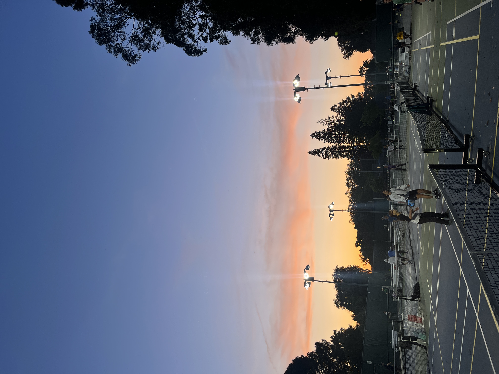
Pickleball is a rapidly growing sport popular in Palo AltoBiking is a great way to get around townBaylands is very pretty especially in the springThe lake at Foothills is great for kayaking or canoeing
Yellowstone
Geographical Location: North America
Yellowstone is the first national park in the United States. It covers over 2.2 million acres, and provides an opportunity to see wildlife and explore geothermal areas. In fact, Yellowstone contains about half the world's active geysers.
Mammoth Hot Springs has a number of actively forming Travertine terraces.The drive to Lamar Valley requires some dangerous roads. But the result is amazing sunset views.The multicolored layers get their hues from different species of bacteria living in the cooler water around the spring.The buffalo were so common along the roads in Yellowstone that our mantra became "If it ain't lickin the car, we aren't stopping."If you can handle the odor, the Yellowstone Sulphur Springs is a great place to hike.
Seattle, Washington
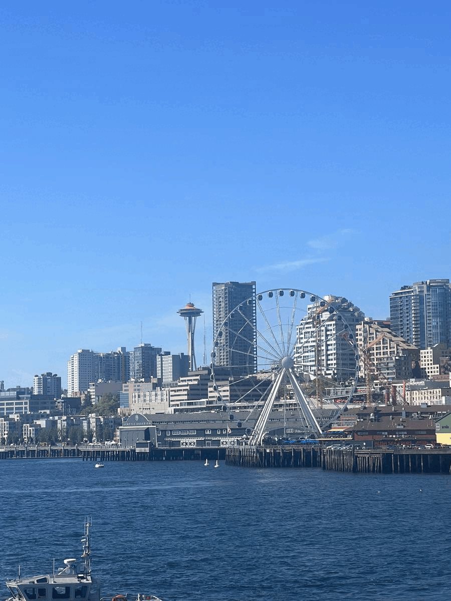
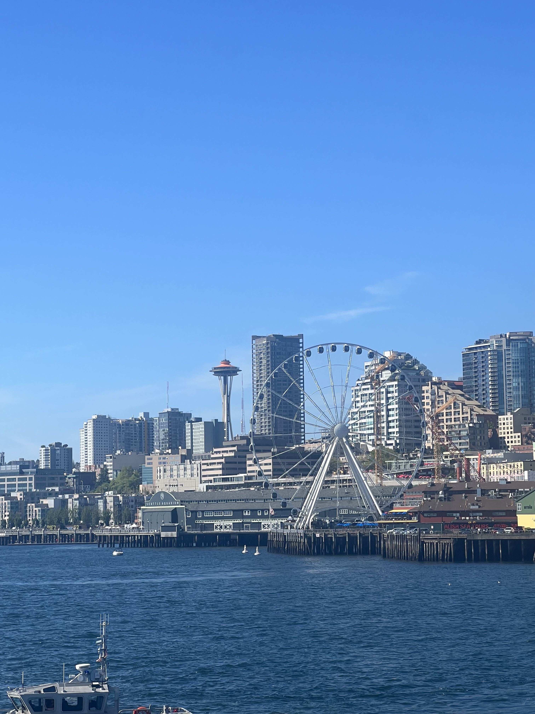
Geographical Location: North America. Seattle, Washington is located in the United States on the North American continent. Seattle is broken up into neighborhoods, some being Capitol Hill, Pioneer Square and Queen Anne. Nearby suburbs include Mercer Island, Bellevue and Kirkland, located approximately 15-20 minutes from Seattle. The University of Washington is located in Seattle. There is an undergraduate and a graduate program within the University and it is known for its pristine academics. U of W is located on the Northern part of Seattle.
Photo Gallery
One of Seattle's most popular monuments, The Great Wheel, taken by ferry boat with views of the Space needle as well.
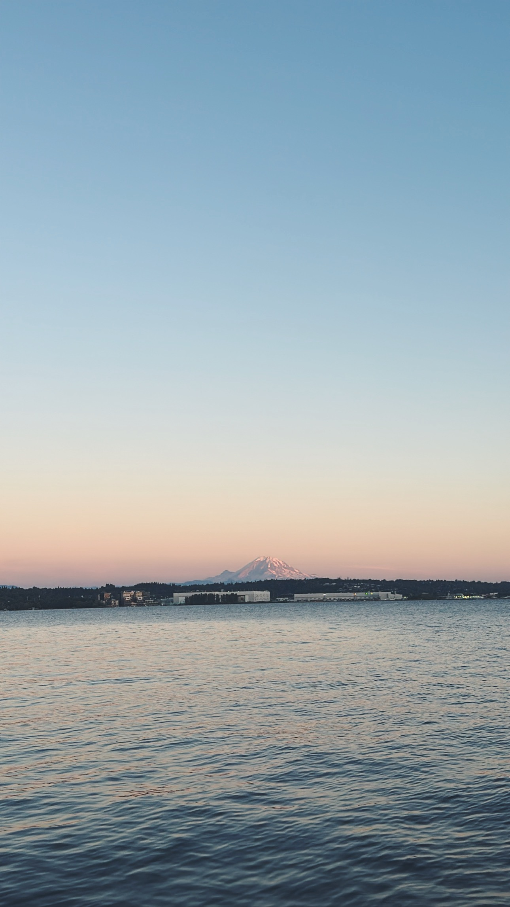
The beautiful mount rainier in Seattle during Sunset
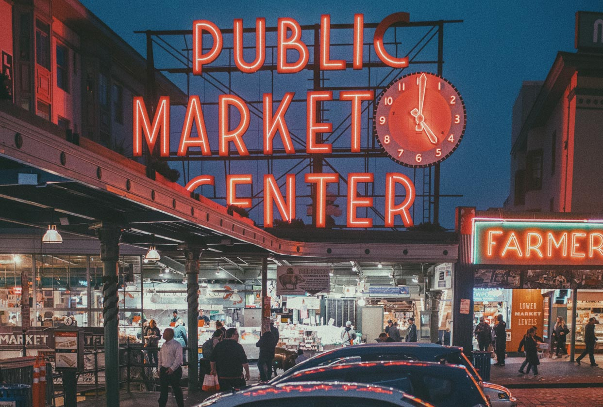
The famous Pike Place market sig
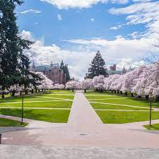
University of Washington's cherry blossoms blooming in their quadrangle
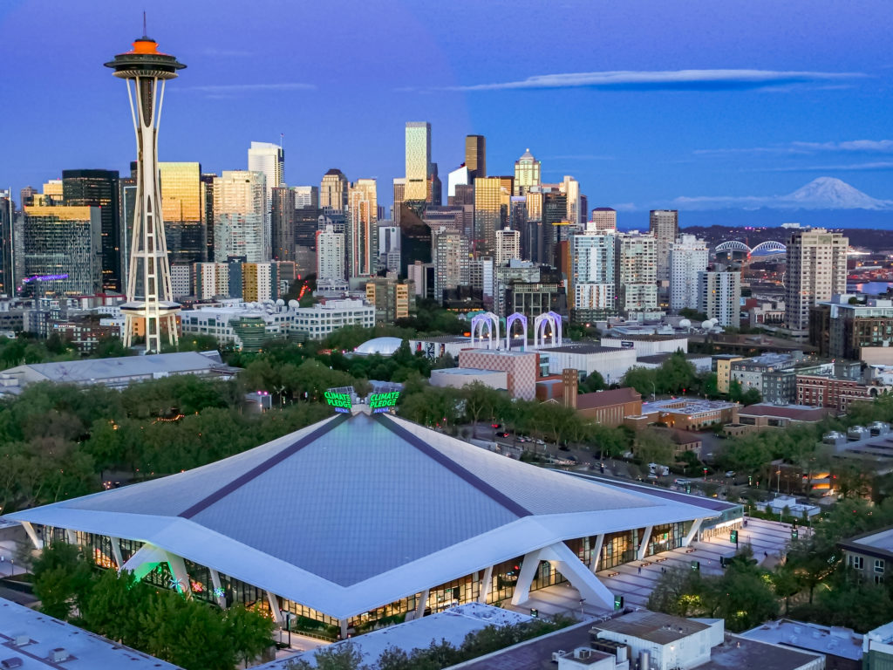
The Seattle skylines lit up at night, featuring the newly built, zero carbon emission hockey arena.
Dubai, United Arab Emirates
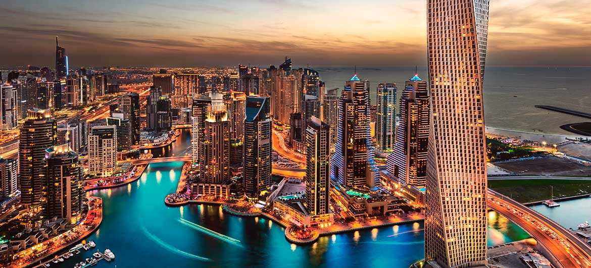
Geographical Location: Asia
Dubai is a growing attraction for many travelers. This city is located in the United Arab Emirates on the southeastern coast of the Persian Gulf. Dubai is renowned for its iconic architecture, luxurious lifestyle, and rapid development. Dubai is a global hub for tourism, innovation, and business.
Dubai is a futuristic oasis in the middle of the desert. This city offers a unique blend of tradition and modernity. Towering skyscrapers offer a breathtaking skyline view. Dubai contains iconic buildings, malls, and islands that fuel its tourism.
Photo Gallery
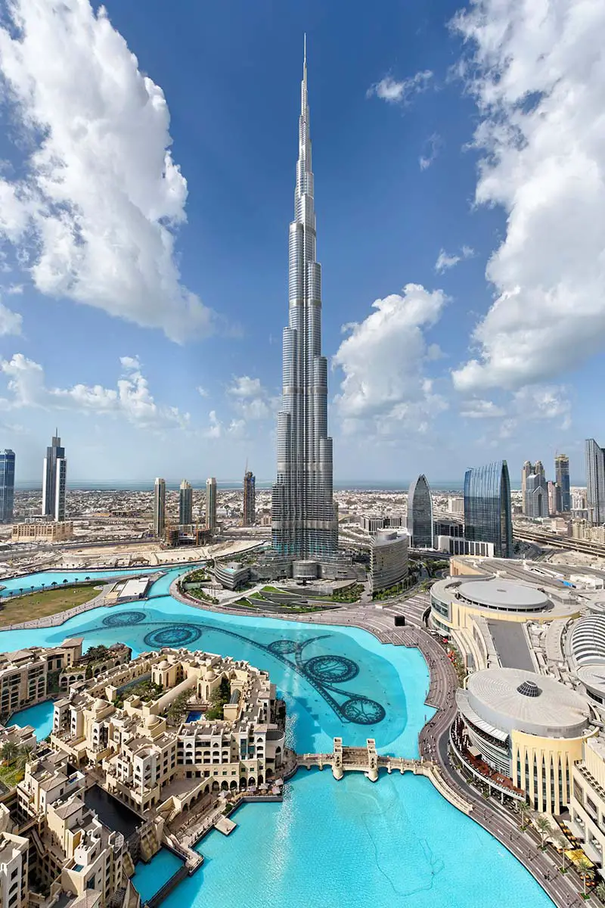
Reaching into the clouds, witness the tallest building in the world the Burj Khalifa.
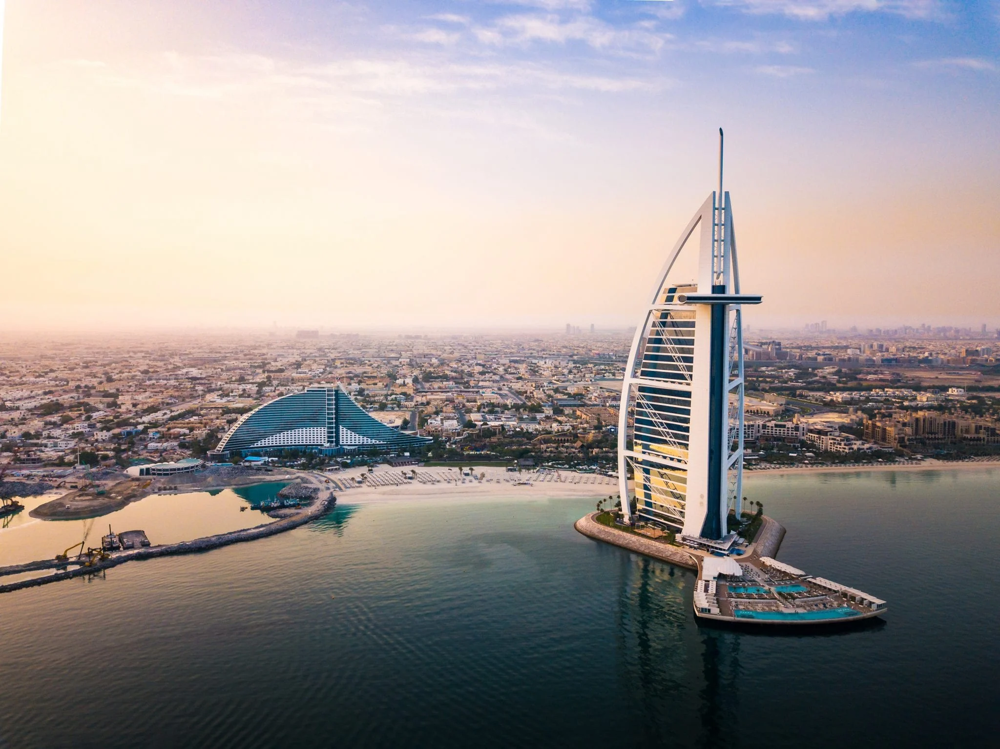
Located just off the coastline, the Burj Al Arab boasts a unique design and world-class service.
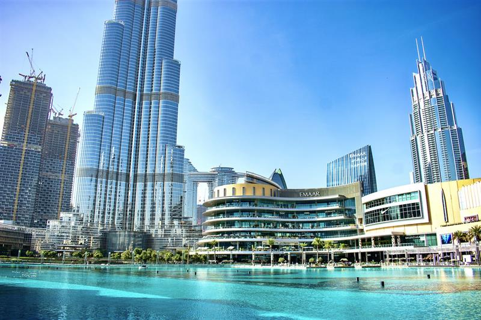
Nestled in the heart of downtown Dubai, the Dubai Mall offers a wide range of experiences from shopping, dining, and entertainment.
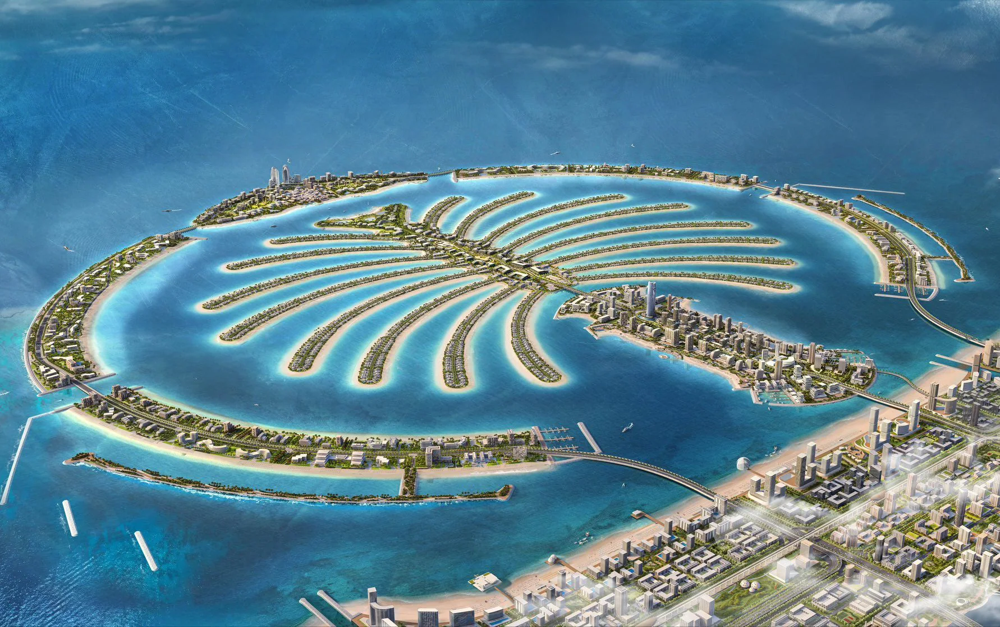
An engineering marvel, the palm islands are shaped like a palm tree and provides an additional area for tourists.
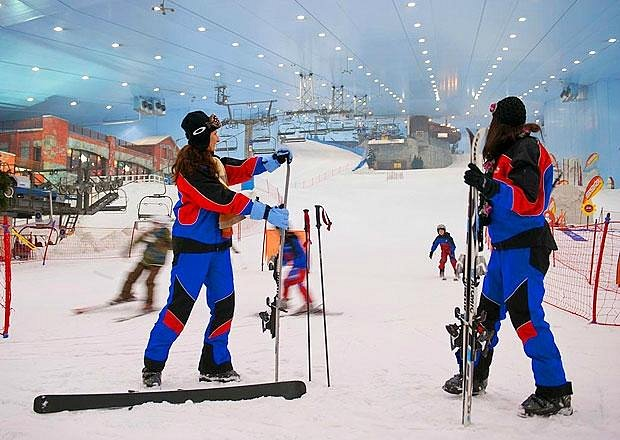
A snowy escape, Ski Dubai offers an indoor winter retreat from the harsh desert heat.
The national capital of Italy remains a historical and political hub today. Nicknamed the “Eternal City,” Rome is considered the origination of the Catholic Church and Roman civilization central to the development of the Western World. Divided into 22 walled rioni (districts) surrounded by 35 quartieri urbani (urban sectors) that are surrounded by 6 large suburbi (suburbs), the city, just larger than New York City at an area of 496 mi2, is home to 2.8 million residents. Its economy runs on the tourism and services industries, the latter mostly in government jobs.
The Via del Corso, named after Roman carnival horse races, is the main street that runs through Rome. Many significant churches, palaces, and squares run along this road (Piazza del Popolo, and the Spanish Steps in Piazza di Spagna, for example). The seven hills that surround Rome are trenched with mythological history which can be seen through the prevalence of temples. Must see landmarks for those traveling include the Colosseum, Roman Forum, Pantheon, and Catacombs. St. Peter’s Square & Basilica and the Sistine Chapel, technically located within Vatican City – an independent city-state within Rome – are also worth a visit.
Photo Gallery
Rome is located in the western-central region of Italy, about 15 miles inland from the neighboring Tyrrhenian Sea. https://stock.adobe.com/search?k=%22rome+map%22 Nested within the Tiber river, the seven hills of Rome both give rise to another nickname and mark the ancient boundaries of the city. https://ontheworldmap.com/italy/city/rome/ Built in 80 AD, the Colosseum was built as an amphitheater for entertainment, and hosted gladiatorial combat and animal fights for over 400 years. https://fullsuitcase.com/colosseum-rome-italy/ Because of ancient Roman law dictating the deceased not to be buried within the city, the labyrinthian tunnels of the Catacombs of Rome stretch for over 12 miles outside city limits. https://www.tickets-rome.com/catacombs-tours/about/ The largest domed temple built in its time, the interior of the Pantheon is illuminated by natural light flowing through a circular oculus and features colored marble and vast columns. https://www.britannica.com/topic/Pantheon-building-Rome-Italy
Jungfrau Switzerland
Geographical Location: Europe
Jungfrau is a city in Switzerland known for its mountain summits nicknamed the “top of Europe.” It is very famous also for its railway created in 1912 that can bring you to a height of 3454m. At the summit there are outstanding views where you can see the whole city and beyond.
The scenery consists of valleys, waterfalls, rock walls, and snow peaks. When visiting, it is vital to go on a day with good weather because it enhances the quality of the views. Hiking is very popular at short trails called Grutschalp and Murren. A very common tourist attraction is also exploring the Lauterbrunnen valley.
Photo Gallery
Jungfrau building summitJungfrau trainLodging in JungfrauLake in JungfrauLookout point at Jungfrau


 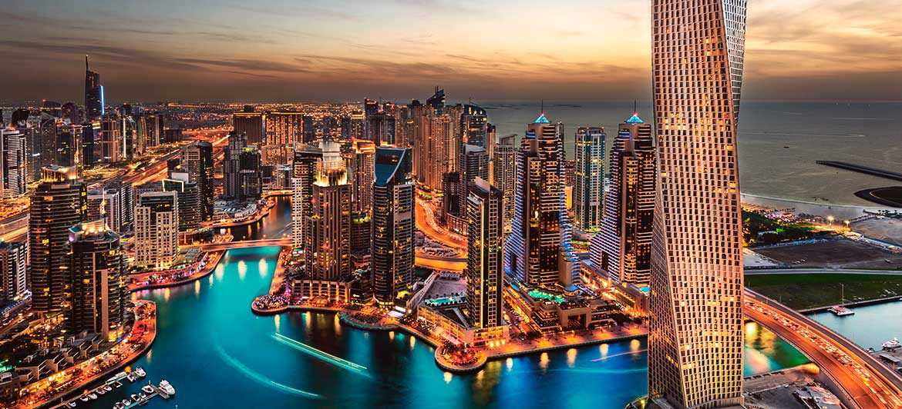
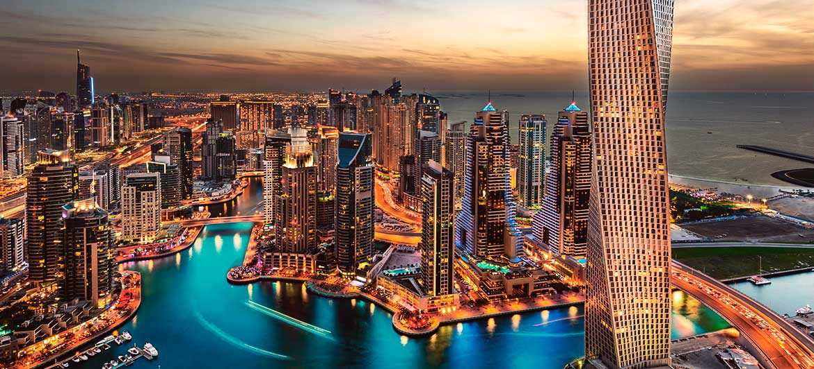